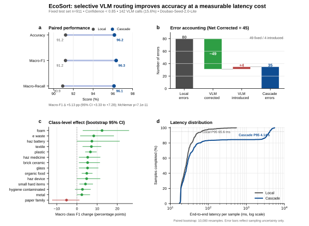

EcoSort
面向真实部署约束的 Local–VLM 自适应多模态分类级联：用本地 EfficientNet-B3 处理多数请求，只把低置信样本交给 Doubao-Seed-2.0-Lite。
Local Model→Uncertainty→Adaptive Routing→VLM Fallback→Evaluation
96.34%Cascade Macro-F1
+5.13 ppPaired Macro-F1 gain
15.59%Actual VLM call rate
+45Net Corrected samples
核心结果 / Main result
| Method | Accuracy | Macro-P | Macro-R | Macro-F1 | P95 latency |
|---|---|---|---|---|---|
| Local EfficientNet-B3 | 91.218% | 91.723% | 90.927% | 91.208% | 65.6 ms |
| + Confidence routing + VLM | 96.158% | 96.744% | 96.117% | 96.337% | 4.14 s |
固定测试集 n=911；confidence < 0.85；真实调用 142 次，140 次成功、2 次失败并保留 local。Macro-F1 配对 bootstrap 95% CI 为 +3.33 至 +7.28 pp，McNemar exact p=7.05×10⁻¹¹。
效果—延迟—调用量闭环

为什么有净收益
- 路由样本中包含56个本地错误，VLM修正49个。
- 86个原本正确的 routed 样本中，仅4个被改错。
- routed subset Accuracy 从60.56%升至92.25%。
- 84.41%请求仍走本地路径，因此总体P50仅27.4 ms。
明确边界
- 全链路P95升至4.14秒，不适合强亚秒同步SLA。
- 一个请求触发图像像素上限，一个输出为未映射
trash。 tissue、tea等目录标签混合材质与处置语义。- 结论只覆盖一个checkpoint、一个VLM版本和固定阈值。
可审计交付
Summary JSON · Per-class delta · Routed transitions · Bad cases · Checksums
所有展示数字均由固定测试集逐样本结果生成；公开数据包不含API Key、Provider response ID、主机绝对路径或原始受版权约束图片。